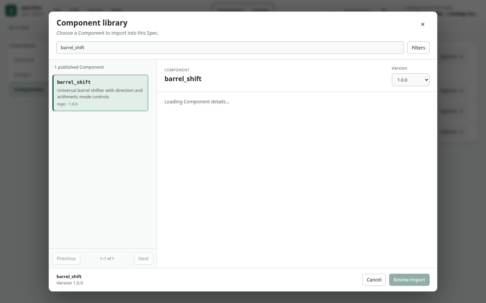
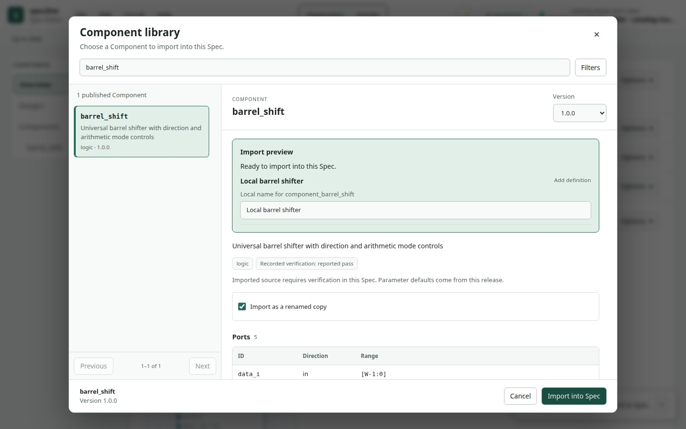
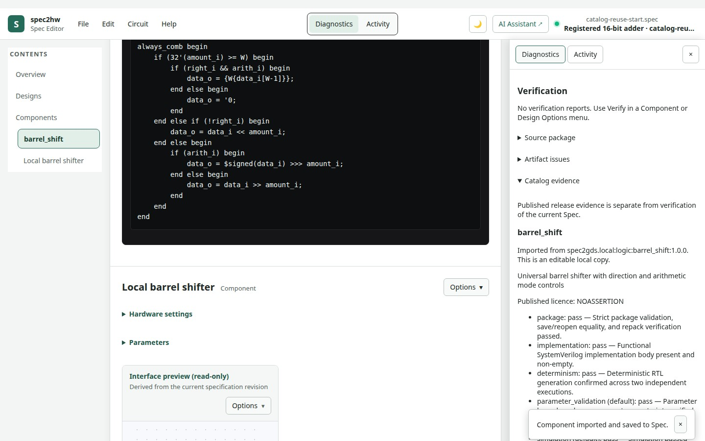

SPEC EDITOR · GUIDED PRACTICE
Reuse a Catalog Component
Import an exact release, resolve a local naming conflict, and distinguish published evidence from current verification.
Before you start
Spec Editor and a running Spec Catalog service with the published barrel_shift release. Use the empty Catalog practice start. No model is needed.
Read each action, do it, then compare the expected result before continuing. Use a fresh prepared start to retry. Reading time and automated execution time are not measured learner practice time.
Actions
Open the Component library
Opencatalog-reuse-start.spec. In Components select Options → Import from catalog….Expected result: The Component library dialog opens without changing the Spec.
Search and inspect filters
Search forbarrel_shift. Expand Filters to inspect category, implementation, and recorded verification options; clear filters that hide the release.Expected result: The matching published Component appears in the results.
Inspect an exact release
Select barrel_shift and inspect its version, interface, parameter defaults, usage, and published evidence. On a narrow screen use Back to results when needed.Expected result: The chosen release is explicit. Published evidence describes that release, not your current Spec.

Inspect a release’s interface, defaults, usage, and evidence before import. Select the image to view its full size. Review the first import
Select Review import. Read the proposed local changes, then select Import into Spec.Expected result: An editable local Component definition is saved with its published defaults.
Inspect the local definition
Close the dialog if needed. Inspect the imported ports, Parameters, and SystemVerilog in the document.Expected result: The definition is self-contained. Import does not automatically create a Design instance.
Try a second import
Open the library again, select the same release, and choose Import as a renamed copy. Select Review import.Expected result: The review requests a local name instead of overwriting the existing definition.
Resolve and import the copy
Set the requested local name to Local barrel shifter, review again, and select Import into Spec.Expected result: Both definitions are retained, with separate local identities.

Review a renamed local copy before saving the import. Select the image to view its full size. Inspect origin and evidence
Open Diagnostics manually. Inspect Catalog origin and published evidence for the imported definitions.Expected result: Origin and published evidence remain separate from verification of the current saved Spec.

Diagnostics separates Catalog origin from verification of the local Spec. Select the image to view its full size. Verify and reopen
If Verilator is available, run Verify Component on the local definition and inspect its current report. Reopen the same Spec and compare both definitions and their origin records.Expected result: Both imports persist. Any current verification identifies this local saved revision; unavailable tools do not become a pass.


Check your result
Two editable local definitions persist without overwriting the first. Their Catalog origin is retained and published evidence is not mistaken for current verification.
Try it yourself
Add an imported definition as an instance in a separate practice Design. Explain the difference between a release, a local definition, and an instance.
If it fails
If no release appears, clear filters and ask the environment maintainer to check the Catalog service and inventory. Do not upload into a shared Catalog to complete this exercise. On a conflict, review the renamed-copy controls; do not delete an existing definition.
Continue
CONTINUEExplore another feature →Reference: spec editor · Complete example